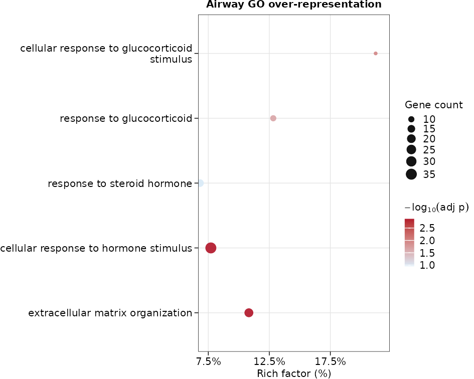
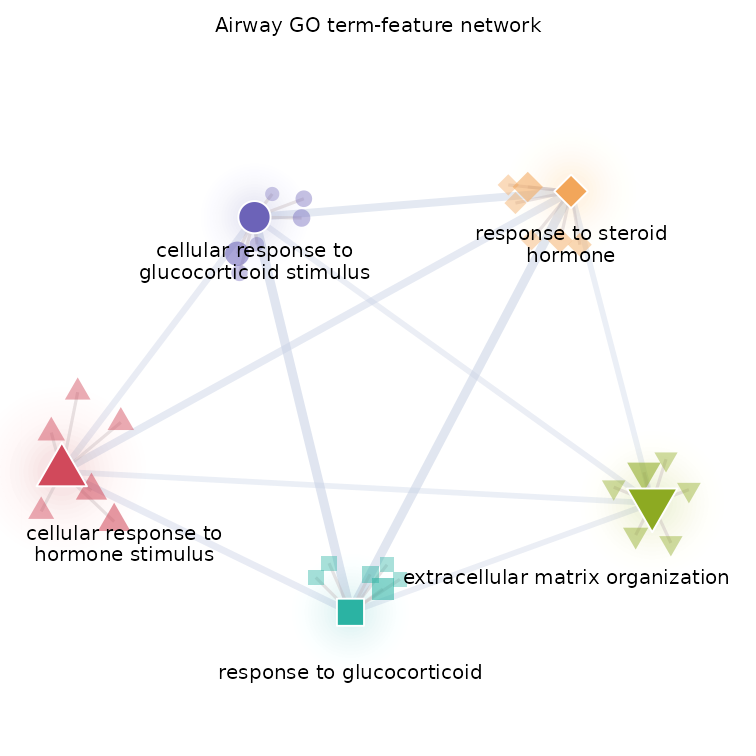
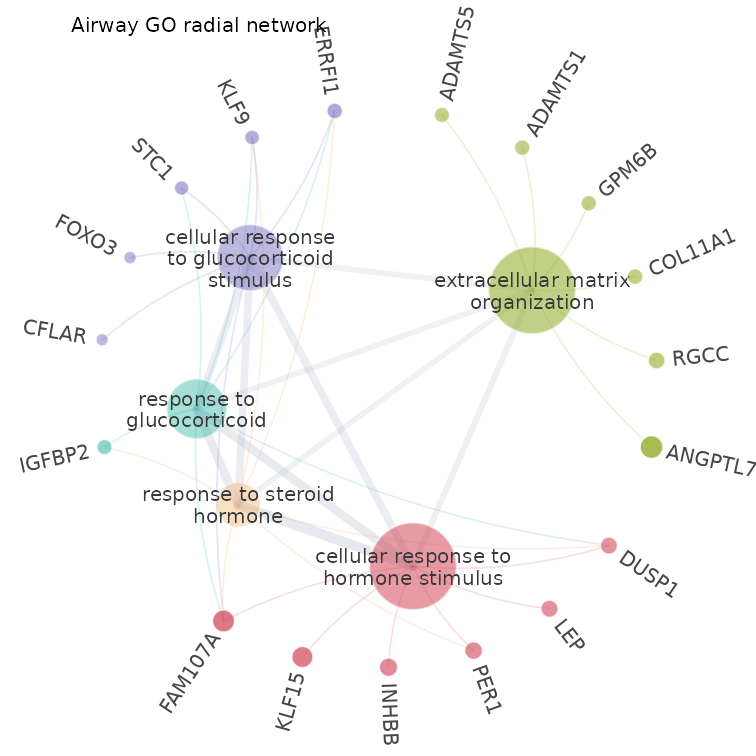
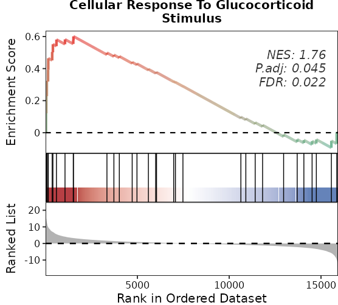
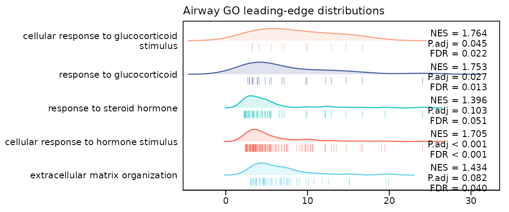

本文完成什么
本文直接接续 airway QC
与配对差异分析：使用同一份真实 counts、同一个
~ cell + dex 模型和同一个 trt - untrt
contrast，完成 GO Biological Process 的 ORA、GSEA、 结果表和 5
幅图。为使本文可以独立执行，下面只重复富集所需的最短差异分析代码。
安装完成后，分析与渲染不访问网络。缺少教学依赖时先运行：
BiocManager::install(c(
"airway", "edgeR", "DESeq2", "clusterProfiler", "org.Hs.eg.db"
))先按问题选方法
knitr::kable(
data.frame(
question = c(
"阈值选出的基因是否在某集合中过多？",
"集合成员是否集中在完整排序的一端？",
"是否要保留样本设计和集合内相关性？",
"RNA-seq 入选概率是否需要长度等偏倚校正？"
),
input = c(
"入选基因 + 全部受检基因背景",
"全部受检基因的有方向统计量",
"log 表达矩阵 + 设计 + contrast",
"全部受检基因的 0/1 向量 + bias"
),
function_name = c(
"enrich_ora(); enrich_go(method = 'ora')",
"enrich_gsea()/enrich_fgsea(); enrich_go(method = 'gsea')",
"enrich_camera()/enrich_fry()/enrich_roast()",
"enrich_goseq()"
),
check.names = FALSE
),
col.names = c("问题", "必需输入", "bulkMAE 接口"),
row.names = FALSE,
caption = "富集方法的最小选择表"
)| 问题 | 必需输入 | bulkMAE 接口 |
|---|---|---|
| 阈值选出的基因是否在某集合中过多？ | 入选基因 + 全部受检基因背景 | enrich_ora(); enrich_go(method = ‘ora’) |
| 集合成员是否集中在完整排序的一端？ | 全部受检基因的有方向统计量 | enrich_gsea()/enrich_fgsea(); enrich_go(method = ‘gsea’) |
| 是否要保留样本设计和集合内相关性？ | log 表达矩阵 + 设计 + contrast | enrich_camera()/enrich_fry()/enrich_roast() |
| RNA-seq 入选概率是否需要长度等偏倚校正？ | 全部受检基因的 0/1 向量 + bias | enrich_goseq() |
本文执行前两项。GO、KEGG、Reactome
是资源选择，不是新的统计原假设；任意本地 gene sets 则可直接 交给
enrich_ora()、enrich_gsea() 或
enrich_fgsea()。
重建同一份 airway 差异结果
data("airway", package = "airway")
counts <- SummarizedExperiment::assay(airway, "counts")
#> Warning: replacing previous import 'S4Arrays::makeNindexFromArrayViewport' by
#> 'DelayedArray::makeNindexFromArrayViewport' when loading 'SummarizedExperiment'
sample_data <- as.data.frame(
SummarizedExperiment::colData(airway),
optional = TRUE
)
feature_data <- as.data.frame(
SummarizedExperiment::rowData(airway),
optional = TRUE
)[, c("gene_id", "gene_name", "symbol", "gene_biotype"), drop = FALSE]
sample_data$dex <- factor(sample_data$dex, levels = c("untrt", "trt"))
sample_data$cell <- factor(sample_data$cell)
feature_data$display_label <- as.character(feature_data$symbol)
missing_label <- is.na(feature_data$display_label) |
!nzchar(feature_data$display_label)
feature_data$display_label[missing_label] <- feature_data$gene_id[missing_label]
feature_data$display_label <- make.unique(feature_data$display_label)
mae <- mae_from_matrix(
expression = counts,
samples = sample_data,
row_data = feature_data,
experiment = "airway",
assay = "counts"
)
keep <- filter_expr(mae, "airway", group = "dex")
mae_filtered <- mae_subset_features(mae, "airway", names(keep)[keep])
fit <- de_deseq2(
mae_filtered,
"airway",
design = ~ cell + dex,
fitType = "parametric",
quiet = TRUE
)
de_result <- de_deseq2_results(
fit,
contrast = c("dex", "trt", "untrt"),
alpha = 0.05
)
de_table_result <- de_table(de_result)输入仍是 63,677 个基因 × 8 个样本；过滤后保留 15,926 个基因。Ensembl ID 始终作为分析键，symbol 只用于图上显示， 因此不会因重复 symbol 而暗中合并基因。
准备 ORA 与 GSEA 输入
ORA 只分析满足上一篇阈值且上调的基因；若研究问题关注下调，应另行运行一次，而不是把两个方向混在 同一个列表中。GSEA 使用全部有限的 Wald statistic。
fdr_threshold <- 0.05
effect_threshold <- 1
selected_up <- de_selected(
de_result,
fdr = fdr_threshold,
min_abs_effect = effect_threshold,
direction = "up"
)
selected_down <- de_selected(
de_result,
fdr = fdr_threshold,
min_abs_effect = effect_threshold,
direction = "down"
)
ranks <- de_ranks(de_result, column = "statistic")
# 仅为精确并列值提供稳定的 Ensembl-ID 次级顺序。
tied_ranks <- duplicated(ranks) | duplicated(ranks, fromLast = TRUE)
number_tied <- sum(tied_ranks)
if (number_tied > 0L) {
minimum_gap <- min(diff(sort(unique(unname(ranks)))))
tie_step <- minimum_gap / (number_tied + 1L)
ranks[tied_ranks] <- ranks[tied_ranks] +
rank(names(ranks)[tied_ranks], ties.method = "first") * tie_step
ranks <- sort(ranks, decreasing = TRUE)
}
stopifnot(!anyDuplicated(unname(ranks)))
org_db <- annotation_orgdb("human")在 FDR ≤ 0.05 且绝对效应 ≥ 1 时，有 478 个上调和 447 个下调基因；GSEA 排序包含 15926 个基因。原始统计量中有 11 个条目属于精确并列组，上面的极小次级顺序不会改变任何原本不并列基因的先后。
绘图条目在查看本次富集 p-value 前固定：四项对应 dexamethasone/激素响应，第五项对应上一篇预先关注的 CRISPLD2 所在 extracellular-matrix 过程。
go_terms <- c(
"GO:0071385", # cellular response to glucocorticoid stimulus
"GO:0051384", # response to glucocorticoid
"GO:0048545", # response to steroid hormone
"GO:0032870", # cellular response to hormone stimulus
"GO:0030198" # extracellular matrix organization
)ORA：上调基因与受检背景
ora_result <- suppressMessages(enrich_go(
genes = names(selected_up)[selected_up],
method = "ora",
org_db = org_db,
key_type = "ENSEMBL",
ontology = "BP",
universe = names(selected_up),
pvalueCutoff = 1,
qvalueCutoff = 1,
pAdjustMethod = "BH",
minGSSize = 15L,
maxGSSize = 500L,
readable = FALSE
))
#> Warning in bitr(gene, fromType = fromType, toType = "ENTREZID", OrgDb = OrgDb):
#> 7.32% of input gene IDs are fail to map...
#> Warning in bitr(gene, fromType = fromType, toType = "ENTREZID", OrgDb = OrgDb):
#> 13.09% of input gene IDs are fail to map...
ora_table <- as.data.frame(ora_result)
stopifnot(nrow(ora_table) > 0L, all(go_terms %in% ora_table$ID))
ora_selected <- ora_table[
match(go_terms, ora_table$ID),
c("ID", "Description", "GeneRatio", "BgRatio", "Count", "p.adjust"),
drop = FALSE
]与下面的 GSEA 一致，ORA 也用
pvalueCutoff = 1、qvalueCutoff = 1
保留全部受检 term，从而稳健地 选出预先指定的条目；显著性仍由结果表中的
adjusted p-value 判断，个别预先指定条目在本次注释版本下
可能并不显著。这避免了教程因注释数据库更新导致某个预先指定条目跌出显著集合而无法构建。
结果是原生
enrichResult；as.data.frame()只用于查看，不会把不同后端强制变成统一结果类。
输入的 478 个上调基因中有 390 个进入 当前 GO BP
检验；BgRatio 报告的有效注释背景为
11,756，不应自行换回原始矩阵行数。
knitr::kable(
ora_selected,
digits = 4,
row.names = FALSE,
caption = "预先指定 GO 条目的 ORA 结果"
)| ID | Description | GeneRatio | BgRatio | Count | p.adjust |
|---|---|---|---|---|---|
| GO:0071385 | cellular response to glucocorticoid stimulus | 7/390 | 33/11756 | 7 | 0.0117 |
| GO:0051384 | response to glucocorticoid | 10/390 | 78/11756 | 10 | 0.0227 |
| GO:0048545 | response to steroid hormone | 15/390 | 220/11756 | 15 | 0.1093 |
| GO:0032870 | cellular response to hormone stimulus | 35/390 | 454/11756 | 35 | 0.0014 |
| GO:0030198 | extracellular matrix organization | 21/390 | 194/11756 | 21 | 0.0014 |
# 图例中的 adj p 是 adjusted p-value 的紧凑写法。
plot_ora_bubble(
ora_result,
terms = go_terms,
x = "rich_factor",
p_value = "adjusted"
) +
labs(title = "Airway GO over-representation")
图 1：预先指定 GO 条目的 ORA rich factor、命中基因数和 adjusted p-value。
网络图分别显示每个条目中绝对效应最大的 6 个命中基因；共享基因在每个所属社区各画一个节点， 网络图按原始设计只标注条目、不标注基因。条目间 Jaccard 边仍使用完整命中成员计算。
ora_membership <- strsplit(
stats::setNames(ora_table$geneID, ora_table$ID)[go_terms],
"/",
fixed = TRUE
)
effects <- stats::setNames(
de_table_result$effect,
de_table_result$feature_id
)
feature_labels <- stats::setNames(
feature_data$display_label,
rownames(feature_data)
)
network_features <- lapply(ora_membership, function(ids) {
utils::head(ids[order(-abs(effects[ids]))], 6L)
})
display_features <- unique(unlist(
network_features,
use.names = FALSE
))
stopifnot(
all(lengths(network_features) == 6L),
all(display_features %in% names(feature_labels))
)
plot_ora_network(
ora_result,
terms = go_terms,
feature_values = effects,
features = network_features,
p_value = "adjusted"
) +
labs(title = "Airway GO term-feature network")
图 2：GO 条目—基因 community network；共享基因在所属社区分别显示，条目间连线表示完整命中集合的 Jaccard 重叠。
径向图复用相同的逐条目基因选择；共享基因在外圈只保留一个节点并连接全部所属条目，所有显示基因均 显式标注。内圈条目连线的宽度和透明度表示共享基因数。
plot_ora_radial(
ora_result,
terms = go_terms,
feature_values = effects,
features = network_features,
feature_labels = feature_labels,
label_features = display_features,
p_value = "adjusted"
) +
labs(title = "Airway GO radial network")
图 3：同一 GO 条目—基因关系的白底径向布局；内圈连线编码共享基因数。
GSEA：完整 Wald-statistic 排序
pvalueCutoff = 1只用于保留五个预先指定条目以便比较；显著性仍由结果表中的
adjusted p-value 判断。
gsea_result <- suppressMessages(enrich_go(
ranks = ranks,
method = "gsea",
org_db = org_db,
key_type = "ENSEMBL",
ontology = "BP",
pvalueCutoff = 1,
pAdjustMethod = "BH",
minGSSize = 15L,
maxGSSize = 500L,
eps = 0,
verbose = FALSE,
seed = TRUE,
by = "fgsea"
))
gsea_table <- as.data.frame(gsea_result)
stopifnot(nrow(gsea_table) > 0L, all(go_terms %in% gsea_table$ID))
gsea_selected <- gsea_table[
match(go_terms, gsea_table$ID),
c("ID", "Description", "setSize", "NES", "p.adjust"),
drop = FALSE
]NES 的正负对应 trt - untrt 排序方向。ORA 和 GSEA
的显著性不必一致：前者检验阈值化上调列表中的
过度代表，后者检验完整排序中的集中位置。
knitr::kable(
gsea_selected,
digits = 4,
row.names = FALSE,
caption = "同一组预先指定 GO 条目的 GSEA 结果"
)| ID | Description | setSize | NES | p.adjust |
|---|---|---|---|---|
| GO:0071385 | cellular response to glucocorticoid stimulus | 33 | 1.7636 | 0.0446 |
| GO:0051384 | response to glucocorticoid | 78 | 1.7531 | 0.0274 |
| GO:0048545 | response to steroid hormone | 220 | 1.3957 | 0.1031 |
| GO:0032870 | cellular response to hormone stimulus | 454 | 1.7052 | 0.0008 |
| GO:0030198 | extracellular matrix organization | 194 | 1.4343 | 0.0819 |
plot_gsea_classic(
gsea_result,
term = go_terms[[1L]]
)
图 4：cellular response to glucocorticoid stimulus 的经典 GSEA running-score 图。
plot_gsea_ridge(
gsea_result,
terms = go_terms,
membership = "leading_edge",
show_statistics = TRUE
) +
labs(title = "Airway GO leading-edge distributions")
图 5：五个预先指定 GO 条目的 leading-edge Wald statistic 分布。
限制与来源
airway 只有四个 cell line 的四对 untreated/treated
样本；~ cell + dex 估计的是该实验内的平均处理
效应，不能代表更广泛人群。ORA 入选阈值、GO 注释版本、gene-set
大小过滤及模型假设都会影响结果， GSEA
也依赖排序统计量和集合定义。这里的条目与基因图均为同一数据上的描述性展示，仍需独立样本和
实验验证。
数据来自 Bioconductor airway ExperimentData 包，对应 Himes 等人的研究：RNA-Seq Transcriptome Profiling Identifies CRISPLD2 as a Glucocorticoid Responsive Gene that Modulates Cytokine Function in Airway Smooth Muscle Cells（PLoS ONE, 2014；PMID 24926665； GEO GSE52778）。数据包说明见 Bioconductor airway 手册。
实际项目需要记录
- 差异模型、contrast、效应方向及 ORA 入选阈值；
- 分析 ID、注释数据库版本、ontology 和 gene-set 大小过滤；
- ORA 的全部受检背景，或 GSEA 的完整排序定义；
- 后端、adjusted p-value 字段和随机种子。
本文使用 bulkMAE 0.4.1、airway 1.32.0 和 org.Hs.eg.db 3.23.1。完整会话如下：
sessionInfo()
#> R version 4.6.1 (2026-06-24)
#> Platform: x86_64-pc-linux-gnu
#> Running under: Ubuntu 24.04.5 LTS
#>
#> Matrix products: default
#> BLAS: /usr/lib/x86_64-linux-gnu/openblas-pthread/libblas.so.3
#> LAPACK: /usr/lib/x86_64-linux-gnu/openblas-pthread/libopenblasp-r0.3.26.so; LAPACK version 3.12.0
#>
#> locale:
#> [1] LC_CTYPE=C.UTF-8 LC_NUMERIC=C LC_TIME=C.UTF-8
#> [4] LC_COLLATE=C.UTF-8 LC_MONETARY=C.UTF-8 LC_MESSAGES=C.UTF-8
#> [7] LC_PAPER=C.UTF-8 LC_NAME=C LC_ADDRESS=C
#> [10] LC_TELEPHONE=C LC_MEASUREMENT=C.UTF-8 LC_IDENTIFICATION=C
#>
#> time zone: UTC
#> tzcode source: system (glibc)
#>
#> attached base packages:
#> [1] stats graphics grDevices utils datasets methods base
#>
#> other attached packages:
#> [1] ggplot2_4.0.3 bulkMAE_0.4.1
#>
#> loaded via a namespace (and not attached):
#> [1] RColorBrewer_1.1-3 jsonlite_2.0.0
#> [3] tidydr_0.0.6 MultiAssayExperiment_1.38.0
#> [5] magrittr_2.0.5 ggtangle_0.1.2
#> [7] farver_2.1.2 rmarkdown_2.32
#> [9] fs_2.1.0 ragg_1.5.2
#> [11] vctrs_0.7.3 memoise_2.0.1
#> [13] ggtree_4.2.0 htmltools_0.5.9
#> [15] S4Arrays_1.12.0 BiocBaseUtils_1.14.2
#> [17] SparseArray_1.12.2 gridGraphics_0.5-1
#> [19] sass_0.4.10 bslib_0.12.0
#> [21] htmlwidgets_1.6.4 desc_1.4.3
#> [23] plyr_1.8.9 httr2_1.3.0
#> [25] cachem_1.1.0 igraph_2.3.3
#> [27] lifecycle_1.0.5 pkgconfig_2.0.3
#> [29] Matrix_1.7-5 R6_2.6.1
#> [31] fastmap_1.2.0 gson_0.2.1
#> [33] MatrixGenerics_1.24.0 digest_0.6.39
#> [35] aplot_0.3.1 enrichplot_1.32.0
#> [37] ggnewscale_0.5.2 patchwork_1.3.2
#> [39] AnnotationDbi_1.74.0 S4Vectors_0.50.2
#> [41] aisdk_1.4.12 ps_1.9.3
#> [43] DESeq2_1.52.0 textshaping_1.0.5
#> [45] GenomicRanges_1.64.0 RSQLite_3.53.3
#> [47] org.Hs.eg.db_3.23.1 labeling_0.4.3
#> [49] httr_1.4.9 polyclip_1.10-7
#> [51] abind_1.4-8 compiler_4.6.1
#> [53] bit64_4.8.6 fontquiver_0.2.1
#> [55] withr_3.0.3 S7_0.2.2
#> [57] BiocParallel_1.46.0 DBI_1.3.0
#> [59] ggforce_0.5.0 MASS_7.3-65
#> [61] rappdirs_0.3.4 DelayedArray_0.38.2
#> [63] tools_4.6.1 otel_0.2.0
#> [65] ape_5.8-1 scatterpie_0.2.6
#> [67] glue_1.8.1 callr_3.8.0
#> [69] nlme_3.1-169 GOSemSim_2.38.3
#> [71] grid_4.6.1 cluster_2.1.8.2
#> [73] reshape2_1.4.5 generics_0.1.4
#> [75] gtable_0.3.6 tidyr_1.3.2
#> [77] XVector_0.52.0 BiocGenerics_0.58.1
#> [79] ggrepel_0.9.8 pillar_1.11.1
#> [81] stringr_1.6.0 yulab.utils_0.2.5
#> [83] limma_3.68.5 splines_4.6.1
#> [85] dplyr_1.2.1 tweenr_2.0.3
#> [87] treeio_1.36.1 lattice_0.22-9
#> [89] bit_4.6.0 tidyselect_1.2.1
#> [91] locfit_1.5-9.12 fontLiberation_0.1.0
#> [93] GO.db_3.23.1 Biostrings_2.80.2
#> [95] knitr_1.52 fontBitstreamVera_0.1.1
#> [97] IRanges_2.46.0 Seqinfo_1.2.0
#> [99] edgeR_4.10.5 SummarizedExperiment_1.42.0
#> [101] stats4_4.6.1 xfun_0.60
#> [103] Biobase_2.72.0 statmod_1.5.2
#> [105] matrixStats_1.5.0 stringi_1.8.9
#> [107] lazyeval_0.2.3 ggfun_0.2.1
#> [109] yaml_2.3.12 codetools_0.2-20
#> [111] evaluate_1.0.5 gdtools_0.5.1
#> [113] tibble_3.3.1 qvalue_2.44.0
#> [115] ggplotify_0.1.3 cli_3.6.6
#> [117] systemfonts_1.3.2 processx_3.9.0
#> [119] jquerylib_0.1.4 Rcpp_1.1.2
#> [121] png_0.1-9 parallel_4.6.1
#> [123] pkgdown_2.2.1 blob_1.3.0
#> [125] clusterProfiler_4.20.0 DOSE_4.6.0
#> [127] tidytree_0.4.8 ggiraph_0.9.6
#> [129] enrichit_0.2.1 ggridges_0.5.7
#> [131] scales_1.4.0 purrr_1.2.2
#> [133] crayon_1.5.3 rlang_1.3.0
#> [135] KEGGREST_1.52.2